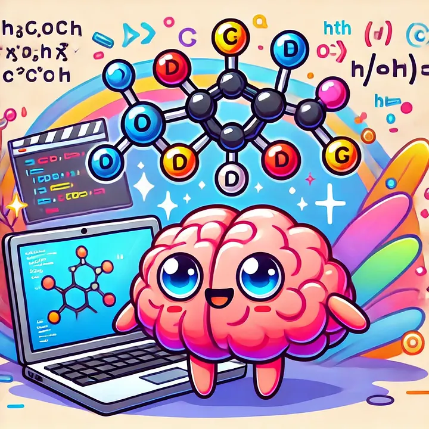

As a software developer, I spend hours staring at the screen, chasing bugs, or untangling a complex logic knot, only to suddenly see the solution click into place. It's a rush, a high that leaves me feeling on top of the world. I often catch myself singing and dancing around the living room after my code produces the result I want. But why does solving a problem feel so good? The answer lies in the fascinating chemistry of our brains.
What is Dopamine, and Why Does It Matter?
🧠 Dopamine is a neurotransmitter, often nicknamed the "feel-good" chemical. It plays a key role in our brain's reward system, regulating pleasure, motivation, and reinforcement learning. When you crack a coding problem, it's not just the logic clicking; it's your brain throwing a mini dopamine party, complete with fireworks and confetti.
When you encounter a problem, your brain enters a state of heightened activity. Neural pathways work overtime, searching for patterns and connections. Scientists call this anticipatory dopamine release. The anticipation of solving the problem primes your brain, making you hyper-focused and motivated.
The real magic happens when you find the solution. This "neurochemical celebration" doesn't just make you feel good; it strengthens the pathways you used to solve the problem, making you better equipped to tackle similar challenges in the future.
From Boss Fights to Bug Fixes
Exactly the same thing happens when you play a video game, so no wonder they are so addictive. Every level completed, rare loot obtained, or boss defeated triggers a dopamine release. The unpredictability of these rewards amplifies the thrill, making games as addictive as they are entertaining. Similarly, in software development, the satisfaction of solving a coding challenge feels just as rewarding. The key difference? Developers are creating solutions, not consuming them.
It is interesting to note that when I (and I believe I am speaking on behalf of the whole gaming community) fail at Sekiro, I feel angry and frustrated. This often results in me turning off the game. However, when I fail at writing code, I do not feel angry or frustrated. I do feel stupid, though. For example, I spent 10 hours trying to figure out how to do something using LangGraph's fantastic framework for multi-agentic systems. I did not swear once, I swear (pun intended 😉). I fixed it by changing something so simple that it didn't even occur to me: I simply elongated a string I was returning.
I still felt stupid, even more so once I realised what the problem was, but I felt such happiness that it didn't matter. "Blessed are the fools, for theirs is the kingdom of heaven."
On a more serious note, the difference in frustration between gaming and coding often comes down to emotional investment and expectations. In gaming, you're immersed in a world where immediate success or failure is highly emotional, especially in competitive or challenging situations. Failures can feel personal or unfair, triggering frustration. In contrast, coding involves a more detached, problem-solving mindset where failure is seen as part of the learning process. The longer-term, systematic approach to overcoming coding obstacles helps maintain emotional distance, making setbacks feel like opportunities to grow rather than personal defeats.
Sweat, Tears, and Dopamine
The next in line for a good hit of dopamine is, of course, exercise. Exercise and coding both reward you with positive feelings, but the key difference is that exercise also has long-term physical health benefits, while coding fosters intellectual growth and creativity.

I will never forget how I cried while walking home after successfully running 7km without stopping for the first time. I was so overwhelmed with feelings of happiness and success that I bawled my eyes out for a good while. The pace was that of a snail, but better late than never! When I was 26, I had just moved back home from The Netherlands. I was jobless and had all the free time in the world, so naturally I started learning French and joined a running school. Yes, you read that correctly: I paid money (not much, mind you) to run on the side of a car-fume-congested road with other people.
I woke up on Saturday mornings after a night of partying to go running with my schoolmates. I stuck with it and graduated with honours, finishing a half-marathon. And yes, you guessed it, I cried again.
I remember going to the gym several times a week to work out my arms and abs, just to get a good grade; we had to punch out 30 push-ups (the fake kind, on your knees, but we were teenage girls) in one minute for an A. On the last exam, I counted 34. I was ecstatic.
And last, but for shizzle not the least, the king (or queen) of dopamine hits: sex. Even if you no longer practice it, I'm sure you remember it fondly. Well, it's not dopamine itself that makes you feel good, but rather how it makes you hungry for more. Dopamine's role in sex is tied to motivation and reward. The anticipation of pleasure triggers dopamine release, and when that pleasure is achieved, the brain rewards you with a hit of dopamine, reinforcing the desire to repeat the behaviour. Over and over again 😉
The Recipe
I guess the recipe for a happy life filled with regular dopamine hits really writes itself.
You spend 8 hours a day coding for work, dedicate an hour to physical exercise, and use the rest of your free time to unwind with games. And, if possible, have some sex. Don't forget to sleep! 😉